Convolutions, edges, sharpening, hybrid images, and multiresolution blending
The main concept running through this whole project is that an image is a smooth layer plus a detail layer. A Gaussian blur is a low-pass filter that keeps the smooth, low-frequency layer. Subtracting the blurred image from the original leaves the high frequencies (edges, texture, and noise). Part 1 uses filters to find edges, which live in the high frequencies. Part 2 then boosts, swaps, and blends the two layers to sharpen images, build hybrid images, and stitch images together seamlessly.
A 2D convolution slides a small filter over the image; at every position the output pixel is the weighted sum of the pixels under the filter. Convolution flips the filter (rotates it 180°) before sliding it over the image. Without the flip it's called cross-correlation, and for asymmetric filters like Dx the result has the opposite sign. I implemented it with numpy, once with four nested loops, and once with two loops where the inner two loops are replaced by one element-wise multiply-and-sum over the filter-sized window.
Padding: I implemented zero-padded “same” convolution: the image is
surrounded by k//2 zeros on each side (for odd-sized filters), so the output has
the same size as the input. After padding, every output pixel is just a “valid”
window computation.
The box filter's weights sum to 1, so it averages (blurs) without changing overall
brightness. Dx and Dy are 1×3 and 3×1 central difference
filters: their weights sum to 0, so they output ~0 on flat regions and large values
where brightness changes. With the flip, (f * Dx)[x] = f[x+1] − f[x−1], which is positive
where the image gets brighter to the right.
def pad_zero(img, kh, kw):
ph, pw = kh // 2, kw // 2
return np.pad(img, ((ph, ph), (pw, pw)), mode="constant", constant_values=0)
def conv2d_4loops(img, kernel):
kernel = np.flip(kernel) # flip both axes
kh, kw = kernel.shape
padded = pad_zero(img, kh, kw)
H, W = img.shape
out = np.zeros((H, W))
for i in range(H): # each output row
for j in range(W): # each output column
total = 0.0
for u in range(kh): # each filter row
for v in range(kw): # each filter column
total += padded[i + u, j + v] * kernel[u, v]
out[i, j] = total
return out
def conv2d_2loops(img, kernel):
kernel = np.flip(kernel)
kh, kw = kernel.shape
padded = pad_zero(img, kh, kw)
H, W = img.shape
out = np.zeros((H, W))
for i in range(H):
for j in range(W):
window = padded[i:i + kh, j:j + kw] # filter-sized patch
out[i, j] = np.sum(window * kernel) # element-wise multiply, then sum
return out
box = np.ones((9, 9)) / 81
Dx = np.array([[1, 0, -1]])
Dy = np.array([[1], [0], [-1]])scipy.signal.convolve2dBoth implementations match scipy.signal.convolve2d(img, k, mode="same", boundary="fill", fillvalue=0)
on all three filters (checked with np.allclose). Runtimes on my grayscale photo:
| Filter | 4 loops | 2 loops | scipy | Matches scipy |
|---|---|---|---|---|
| 9×9 box | 1.837 s | 0.273 s | 0.0120 s | True |
| Dx (1×3) | 0.097 s | 0.270 s | 0.0014 s | True |
| Dy (3×1) | 0.109 s | 0.259 s | 0.0012 s | True |
Runtime: For the 9×9 box filter, the two-loop version is about 7× faster than the
four-loop version, because the 81 per-pixel multiply-adds run inside numpy instead of
the Python interpreter. For the tiny Dx/Dy filters the four-loop version is actually
faster. With only 3 multiplications per pixel, numpy's fixed per-call overhead
(slicing the window, allocating a temporary array, calling np.sum) outweighs what it
saves. That is why the two-loop time is roughly constant (~0.27 s) across filters. SciPy
is 20–200× faster than either, since the whole computation runs in optimized compiled code.
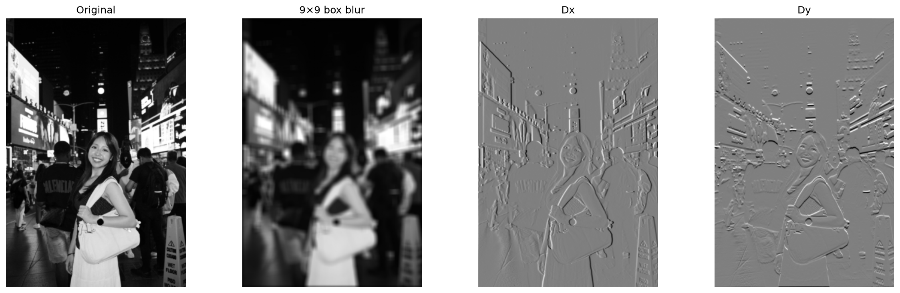
I convolved the cameraman image with Dx and Dy to get the partial derivatives, then
computed the gradient magnitude, which measures edge strength independent of direction:
From here on I used scipy.signal.convolve2d with boundary="symm" (mirror padding), so
the image border doesn't create fake edges the way zero padding does.
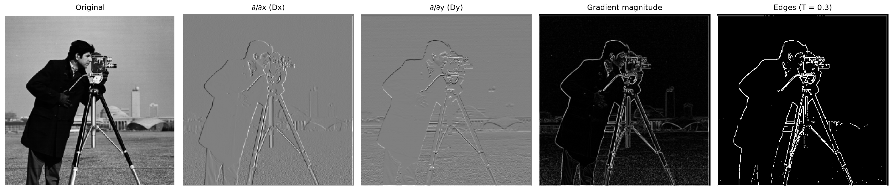
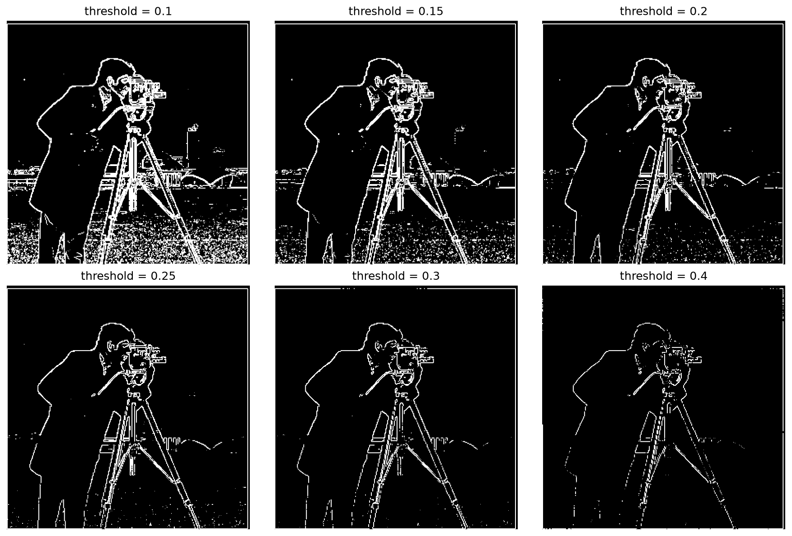
I chose T = 0.3. Lower thresholds (0.10–0.20) keep all object outlines but also mark much of the grass texture as edges. Higher thresholds (0.4) remove the noise but start breaking up real edges such as the tripod legs and the outline of the coat. At 0.3 the cameraman, camera, and most of the tripod have clear outlines with almost no noise in the grass (but at the cost of some small gaps in the lower tripod legs and coat). The noise and the faint real edges overlap in magnitude, so no single threshold separates them perfectly.
To suppress the noise, I blurred the image with a Gaussian first and then repeated the
procedure. I built the 2D Gaussian as the outer product of a 1D Gaussian from
cv2.getGaussianKernel with its transpose (σ = 1.5, kernel size 11×11).
def gaussian_2d(sigma):
ksize = 2 * int(np.ceil(3 * sigma)) + 1 # covers +/- 3 sigma, always odd
g1d = cv2.getGaussianKernel(ksize, sigma) # column vector (ksize, 1)
return g1d @ g1d.T # outer product -> (ksize, ksize)
G = gaussian_2d(1.5)
# Method A: blur then differentiate
cam_blur = conv(cam, G)
blur_dx, blur_dy = conv(cam_blur, Dx), conv(cam_blur, Dy)
blur_mag = np.sqrt(blur_dx**2 + blur_dy**2)
# Method B: one convolution with derivative-of-Gaussian filters
DoG_x = convolve2d(G, Dx, mode="full") # (11, 13)
DoG_y = convolve2d(G, Dy, mode="full") # (13, 11)
dog_dx, dog_dy = conv(cam, DoG_x), conv(cam, DoG_y)
dog_mag = np.sqrt(dog_dx**2 + dog_dy**2)Blurring spreads each edge over several pixels, so gradient values are smaller and the threshold must be lower. I chose T = 0.10. At this value the grass is essentially gone and the outlines of the cameraman, camera, and all three tripod legs are continuous.
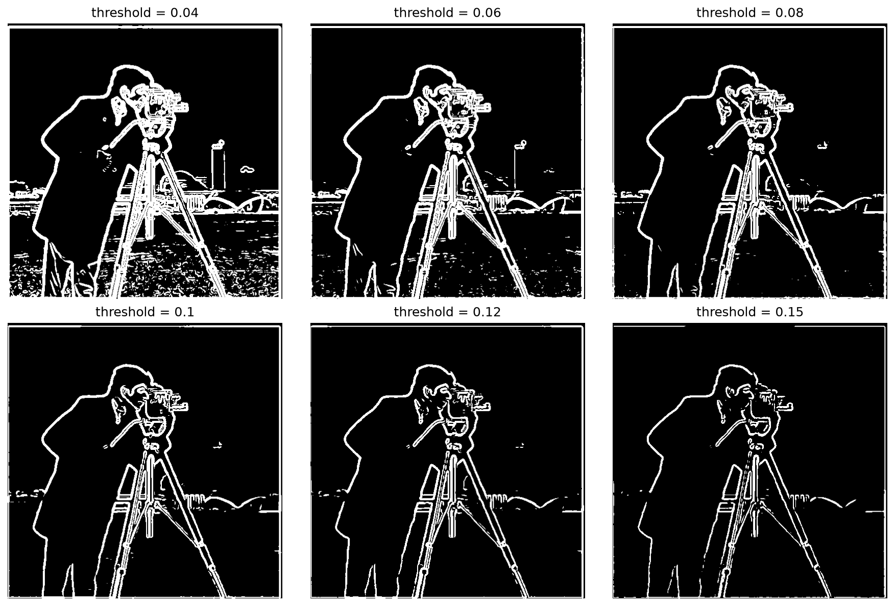
Because convolution is associative, (I ∗ G) ∗ Dx = I ∗ (G ∗ Dx), so the blur and
the derivative can be merged into a single filter. Each DoG filter is a Gaussian split into a
positive half and a negative half. It compares the blurred brightness on one side of a pixel
with the blurred brightness on the other. (Gray = 0, white = positive, black = negative,
the plain Gaussian is all positive.)
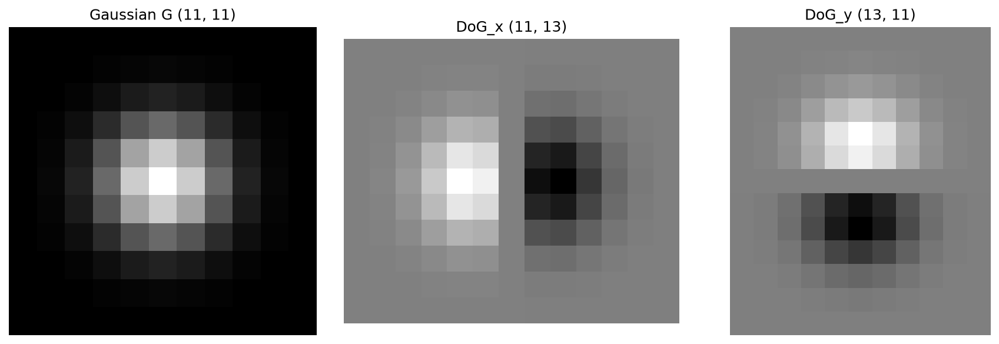
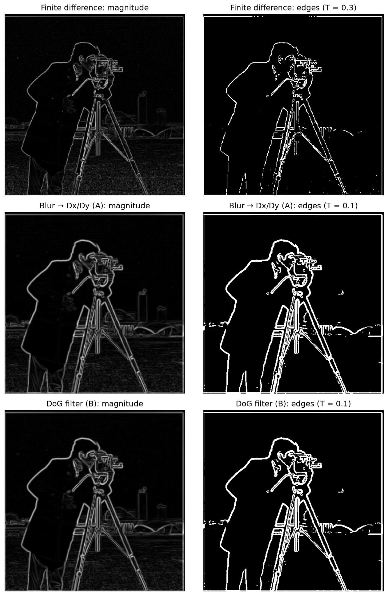
Differences: Compared with plain finite differences, smoothing first removes most of the grass noise while keeping the real outlines of the cameraman, camera, and tripod. This means a lower threshold can be used without picking up noise, so edges come out continuous instead of broken. The reason is that finite differences respond to any pixel-to-pixel change, so random texture produces derivatives as large as real edges. Meanwhile, Gaussian smoothing averages each pixel with its neighbours, so random fluctuations cancel while consistent brightness differences between regions survive as softened ramps. The trade-off is that edges are thicker and less precisely localized, and very small details (parts of the camera) merge together, because the blur spreads every edge across several pixels.
Verification: The DoG result matches blur-then-differentiate. The max difference in the
interior is 1.0495077029659683e-15 (np.allclose is True).
I compared away from the border because the two methods pad slightly differently. Method A mirror-pads twice
(once for G, once for D), while Method B mirror-pads once with a bigger filter, so the outermost few pixels differ.
A Gaussian filter is a low-pass filter. It keeps smooth, slowly-changing content and removes fine detail. Subtracting the blurred image from the original leaves only the high frequencies (edges and texture). An image tends to look sharper when its high frequencies are stronger, so adding a multiple α of them back sharpens the image.
Sharpening can be written as one filter. Since the image equals itself convolved with the impulse filter e (a 1 in the center, zeros elsewhere), and convolution is linear, image + α(image − image∗G) equals image ∗ ((1+α)e − αG). This unsharp mask filter has a large positive center and a slightly negative surround, and gives the same result as blurring, subtracting, and adding back (verified with np.allclose).
def unsharp_filter(sigma, alpha):
G = gaussian_2d(sigma)
e = np.zeros_like(G)
e[G.shape[0] // 2, G.shape[1] // 2] = 1.0
return (1 + alpha) * e - alpha * G
def conv_color(img, k):
return np.stack([conv(img[..., c], k) for c in range(3)], axis=-1)
# three-step version
blurred = conv_color(img, G)
high = img - blurred
sharp = np.clip(img + alpha * high, 0, 1)
# single-convolution version
sharp2 = np.clip(conv_color(img, unsharp_filter(sigma, alpha)), 0, 1)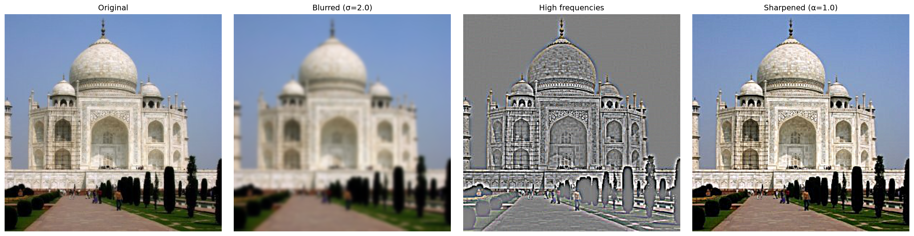
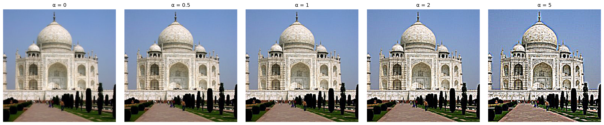
α = 0 is the original. Small values (0.5–1) give a natural, subtle boost in crispness. At α = 2 the image starts to look processed, and at α = 5 there are bright and dark halos around edges and noise is amplified.
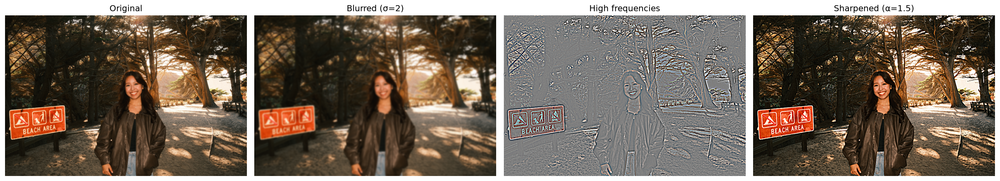
To evaluate the method, I took a sharp image, blurred it (Gaussian, σ = 2), and then applied the unsharp mask (α = 1.5).
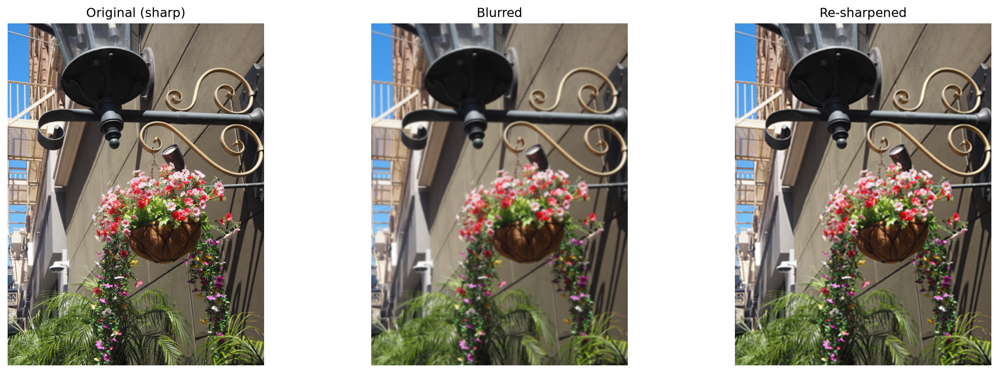
The mean absolute error versus the original dropped from 0.047 for the blurred image to 0.037 for the re-sharpened one, which is about a 20% improvement. Visually, the re-sharpened image has much crisper edges, but it does not match the original. The finest textures like the leaves remain missing and blurred. This is because the Gaussian blur removes high-frequency information, and the unsharp mask can only amplify the high frequencies that remain. It makes the image look sharper without restoring the lost detail.
Hybrid images change interpretation with viewing distance. High frequencies dominate perception when they are visible (up close), but from far away only the low frequencies can be seen. So I combine the low frequencies of one image with the high frequencies of another:
def blur(img, sigma):
# separable Gaussian: 1D filter along rows, then along columns
ksize = 2 * int(np.ceil(3 * sigma)) + 1
g = cv2.getGaussianKernel(ksize, sigma)
return conv(conv(img, g.T), g)
def hybrid_image(im_low, im_high, sigma_low, sigma_high, gain=1.0):
low = blur(im_low, sigma_low) # keep only coarse shapes
high = im_high - blur(im_high, sigma_high) # keep only fine detail
return np.clip(low + gain * high, 0, 1), low, highBecause a 2D Gaussian is the outer product of two 1D Gaussians, I blur rows and then columns with the 1D filter, which gives the same result as the 2D filter but much faster for the large σ values needed here.
Alignment matters a lot for perceptual grouping. I first rotated Nutmeg's photo by 27° so her head was upright like Derek's, then aligned the two images with the starter code by clicking the two eyes on each. The 50/50 overlay of the aligned images had the eyes, ears, and head outline lined up.
Cutoff frequencies: I made the hybrid by low-pass filtering Derek (σlow = 10) and high-pass filtering Nutmeg (Nutmeg minus a σhigh = 4 blur), then adding them. A Gaussian with standard deviation σ cuts off at roughly 1/(2πσ) cycles per pixel: about 0.016 for the low-pass and 0.040 for the high-pass. I chose σlow larger than σhigh so that the two frequency ranges don't overlap. With σhigh too large, both faces are visible at the same distance, and with σhigh too small a band of mid frequencies belongs to neither image and the result looks washed out or too faint. (10, 4) gave the best balance from my testing. Nutmeg's ears, fur, and whiskers dominate up close, while Derek's face is still readable from afar.
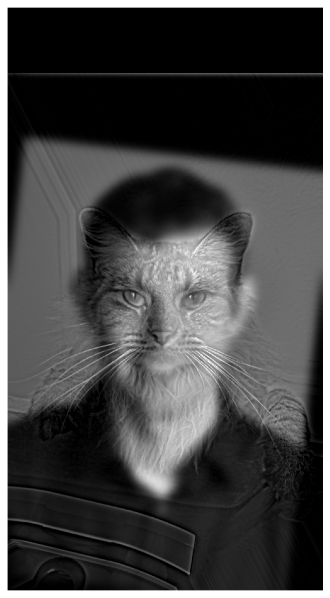
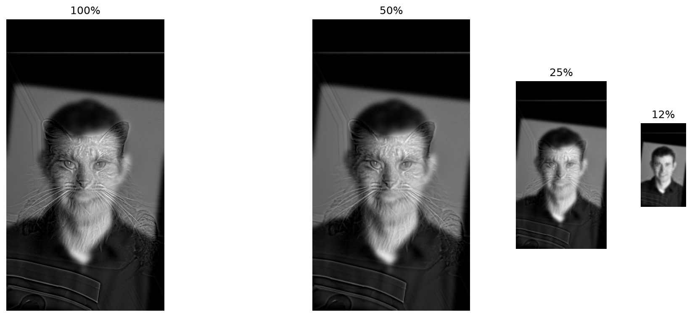
Shrinking the image is like viewing it from farther away. At full size the high-frequency component dominates and the image reads as a cat. As the image shrinks, those fine details fall below the resolution of the display and only the low-frequency component survives, so the smallest version reads as Derek.
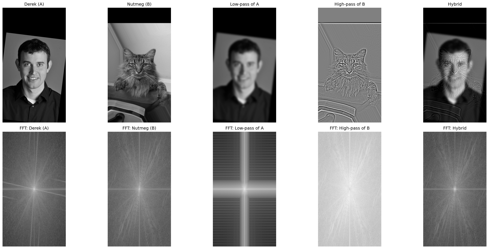
The bottom row shows the log magnitude of each image's Fourier transform, with low frequencies at the center and higher frequencies farther out. Derek's and Nutmeg's images both contain a broad range of frequencies. After low-pass filtering Derek (σ = 10), only the central, low-frequency region remains and the outer region is dark. After high-pass filtering Nutmeg, the center is suppressed and the outer, high-frequency region remains. The hybrid's spectrum combines the two, with low frequencies from Derek, high frequencies from Nutmeg. The bright horizontal and vertical lines in the low-pass spectrum come from the hard edges at the image border and the black padding, and the streaks in Derek's spectrum come from the straight edges of his tilted background.
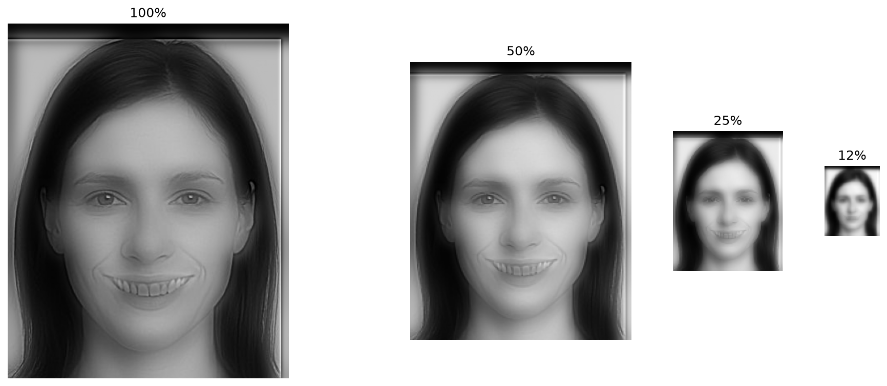
Change of expression from smiling (near) to neutral (far). Hybrid (σlow = 8, σhigh = 2)
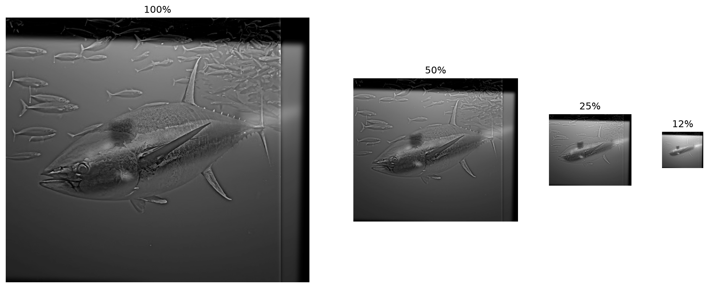
Morph from fish (near) to submarine (far). Hybrid (σlow = 6, σhigh = 4)
A stack splits an image into many frequency bands, like a pyramid but without downsampling, so every level has the original size. The Gaussian stack repeatedly blurs the image. I doubled σ at each level (2, 4, 8, 16) so it behaves like a pyramid whose levels are halved in size. The Laplacian stack stores the difference between adjacent Gaussian levels, so each level holds one band of frequencies: L0 is the finest detail, later levels are progressively coarser structure, and the last level is the residual low-pass image.
Because the differences telescope, summing all Laplacian levels reconstructs the original image exactly (max error 1.1102230246251565e-16). I implemented both stacks from scratch using my own convolution-based blur, without any pyramid functions.
def gaussian_stack(img, levels=5, sigma=2):
stack = [img]
for i in range(1, levels):
stack.append(blur(stack[-1], sigma * 2 ** (i - 1))) # sigma doubles each level
return stack
def laplacian_stack(img, levels=5, sigma=2):
g = gaussian_stack(img, levels, sigma)
lap = [g[i] - g[i + 1] for i in range(levels - 1)]
lap.append(g[-1]) # last level = blurriest Gaussian, so the stack sums to the image
return lap, g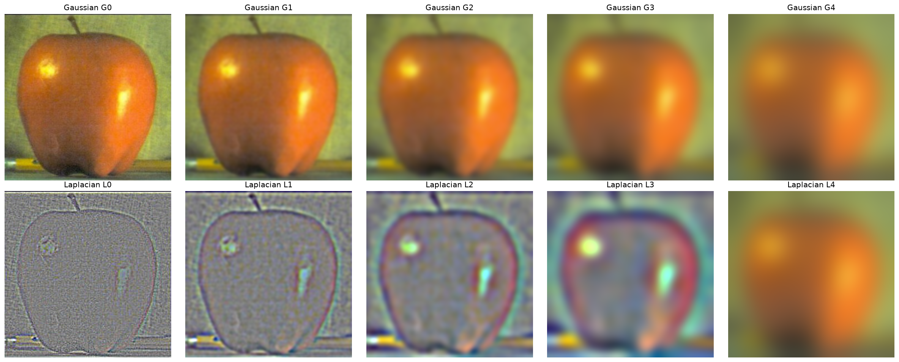
Apple: Gaussian stack (top), Laplacian stack (bottom)
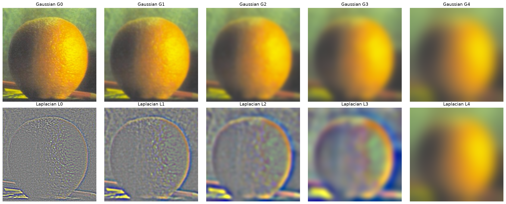
Orange: Gaussian stack (top), Laplacian stack (bottom)
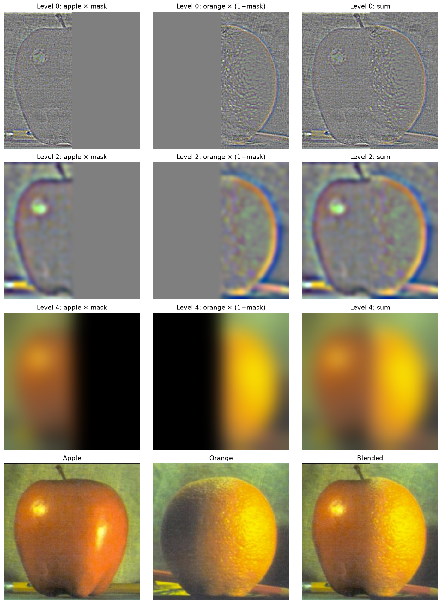
At level 0 (fine detail) the mask is nearly a sharp step, so the seam is narrow. At level 4 (coarse structure) the mask is very blurry, so the two images fade into each other over a wide region.
A hard cut leaves a visible seam, and a single blurred crossfade either leaves a seam or ghosts both images. The problem is that one transition width can't suit every frequency since fine detail should switch over quickly, while coarse color and shading should change gradually. Multiresolution blending fixes this by blending each frequency band separately. I build Laplacian stacks of both images and a Gaussian stack of the mask, blend each band with the mask at that level, and sum:
Here Mi is level i of the mask's Gaussian stack (same σ as the image stacks). The mask is sharpest at the finest level and blurriest at the coarsest, so fine textures switch between images over a narrow region (avoiding ghosting) while low-frequency color and shading transition over a wide region (avoiding a visible seam). Because I'm using stacks instead of pyramids, I always use a mask, as in the Burt–Adelson algorithm on page 230.
def multires_blend(A, B, mask, levels=5, sigma=2):
# mask = 1 where image A is used, 0 where image B is used
lapA, _ = laplacian_stack(A, levels, sigma)
lapB, _ = laplacian_stack(B, levels, sigma)
gm = gaussian_stack(mask, levels, sigma)
bands = [gm[i] * lapA[i] + (1 - gm[i]) * lapB[i] for i in range(levels)]
return np.clip(sum(bands), 0, 1), lapA, lapB, gmThe mask is a step function: the left half is 1 (apple) and the right half is 0 (orange).
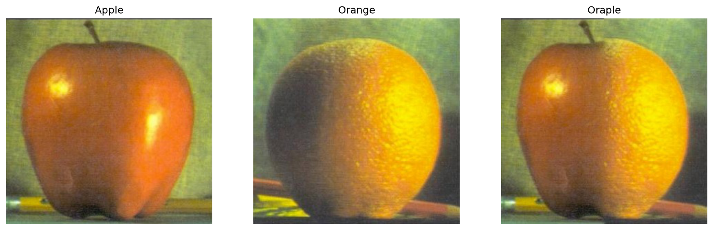
The blend function combines pixels at the same location in two same-size images, so I first built the images to blend. I cropped the eye photo, scaled it down, and pasted it onto a copy of the hand image at the palm to form image A, and the original hand is image B. Since A and B are identical outside the eye, an elliptical mask slightly smaller than the pasted rectangle limits the blend to the eye region and keeps the rectangle's hard edges and pink corners out. The blend then embeds the eye in the skin. The fine detail (lashes, iris) switches over a narrow band, while coarse color and shading pick up the palm's tone.
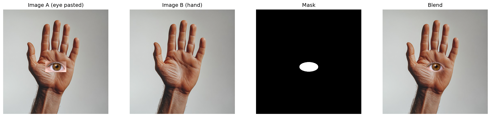
For a double-exposure effect, I placed a forest photo inside a silhouette of a head. The mask is the silhouette's outline (white inside the head, black outside), which is far from a straight line. The soft glow around the outline is the coarse bands fading gradually, while the fine detail of the trees stays crisp inside the head.
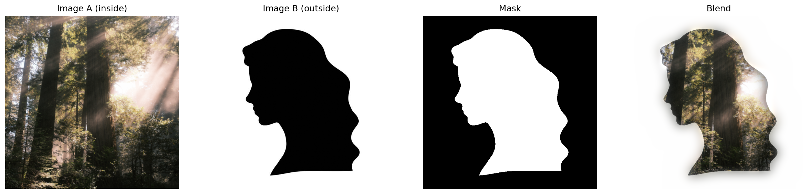
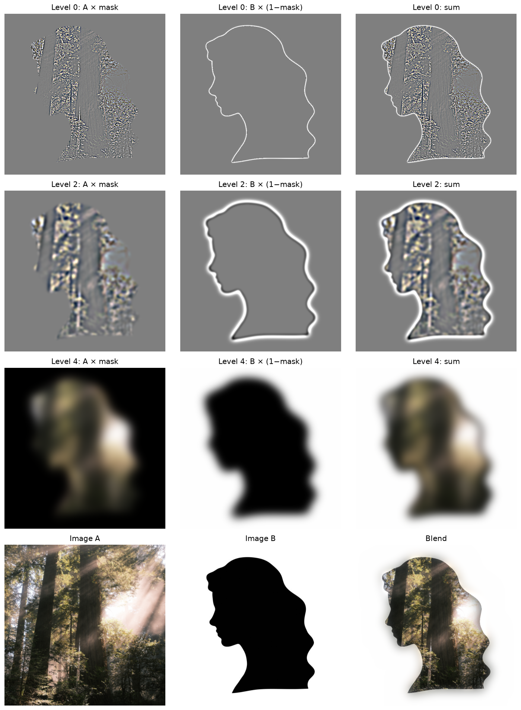
The most important thing I learned is how much the preparation matters. My first hybrid images looked bad until I straightened Nutmeg's photo before aligning, and my first eye-in-palm blend did not work until I realized the blend function only mixes two images that are already the same size and lined up. Choosing sigmas was important, but I must first get the inputs right.